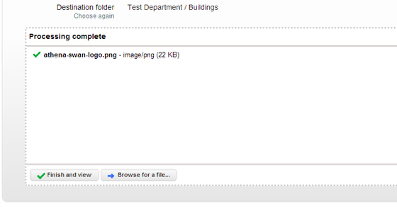
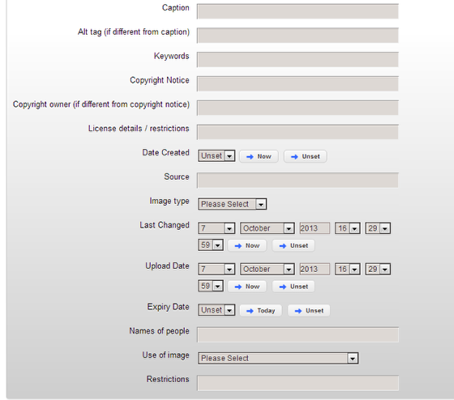
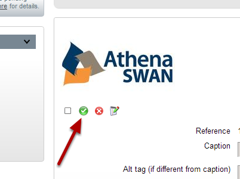
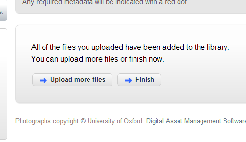
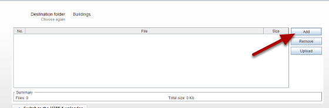
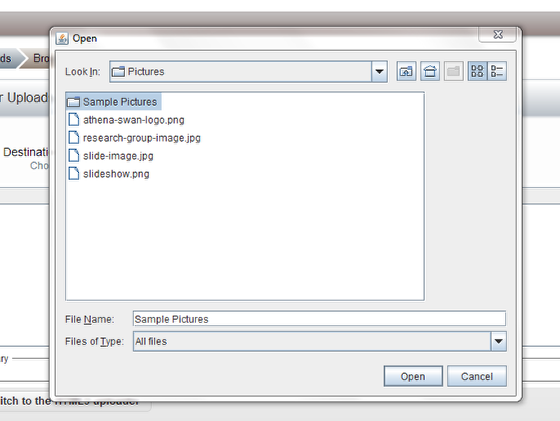
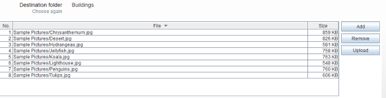
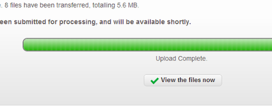
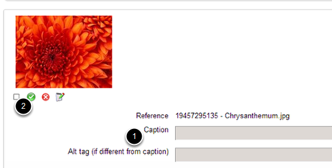

Shows you how to upload an image to the Image Management System. You can also upload folders of images. If you don’t have an account for the Image Management System please contact your Editor in Chief in the first instance.
Click on Uploads and then select Browser Uploads.
Click on the Choose a folder button
On the left hand side of the screen select the folder you would like to upload your images to.
You can drag and drop the image(s) you would like to upload from your computer to the upload box in the image management system
        